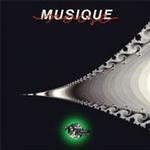

| Artist: | Musique Noise |
| Title: | Fulmines Integrales |
| Label: | Musea FGBG4409 |
| Length(s): | 73 minutes |
| Year(s) of release: | 1988/2001/2002 |
| Month of review: | [06/2003] |
| 1) | Pas Encore | 8.03 |
| 2) | Unique Au Monde | 8.40 |
| 3) | Mise Au Point | 1.57 |
| 4) | Pour Qui Sont Ces Rangers Qui Marchent Sur Nos Tetes? | 7.46 |
| 5) | L'etroit Huit | 8.17 |
| 6) | Vision Intempestive | 9.27 |
| 7) | Ecco | 8.23 |
| 8) | Ragnarok | 8.11 |
| 9) | Villiers | 7.44 |
| 10) | Pzkr! | 4.39 |
Unique Au Monde is based on the alternation of male and female choirish humming, accompanied by gentle keys. This tends to float on a bit, until a sax forces a break, creating room for keys and more elaborate rhythms.
The short Mise Au Point brings up the speed and refires the neuroticism full blast.
Pour Qui Sont.. starts somewhat slow, with male vocals backupped with witchy langhing. From this the track builds, also opening up for Nina Hagen like vocals, musically pressed on by organ and drums.
l'etroi Huit is less controlled by the typically neurotic vocals, and with taht show more room for melodical development. Despite the fact of neuroticism creeping in during the track, it's still more driven than most others and finds a better balance. This track concludes the original 1988 debut.
Vision Intempestive sounds more direct than the older material, but this is mostly caused by a more live, less produced sound. Stylistically this material blends perfectly with that of the debut.
Ecco initially has a more acoustic feel, with dominant piano and mostly sole male vocals. As the track progresses sax comes in, and the vocals become less gentle. As the female vocals return, we have built back up towards the band's regular sound.
Ragnarok takes no prisoners. I'm not sure I'm happy about that, there's no peace for the wicked. The Keys are particularly neurotic in this track, make the experimental intermezzo a near reprieve. From this the track develops pretty decently. A bit jazzy, and rather instrumental. The ending is rather abrupt.
Villiers has more vocals, and possibly due to that sounds more live, and somewhat amateurish. Having said that, the synths sound a bit insecure too.
Pzkr! holds high speed samples of other material with odd voices interlaced. Sort of a funny closing for the album, but more tongue in cheek than you would expect.